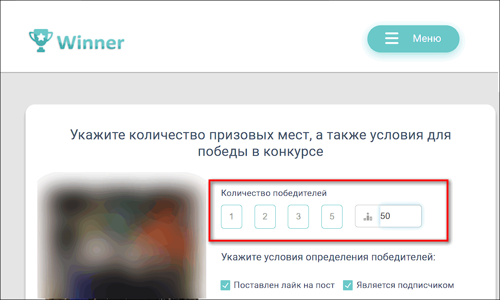
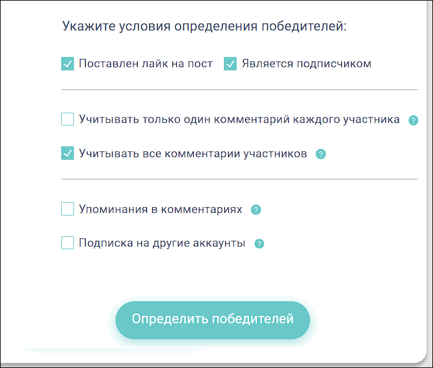
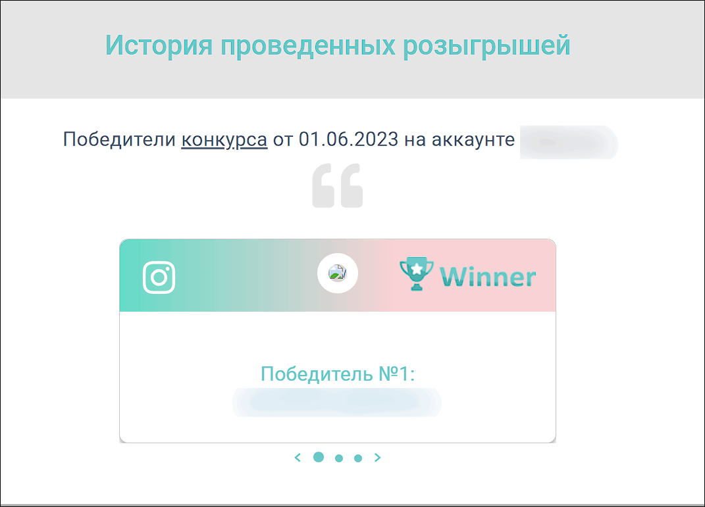

Организовать розыгрыш в Инстаграме: от идеи до итогов

Чтобы организовать конкурс в Инстаграме* нужно заранее распланировать графики размещения публикаций, прогревов и основных этапов. Не лишним выбрать партнеров, форматом проведения, проверить опыт конкурентов при проведении подобных мероприятий.
Зачем проводить розыгрыши в Инстаграме*
Розыгрыши – это эффективный способ, как повысить активность в своем аккаунте. Помимо того, что организатор получает новых подписчиков, также проявляют взаимодействие с постами и постоянные. Так, владелец профиля может провести небольшое мероприятие, которое включает всего лишь «поставить лайк и написать комментарий» и получить максимальный охват для своих постов. Причины, по которым стоит проводить розыгрыш:
- получить новую аудиторию и повысить охваты;
- заслужить доверие подписчиков;
- попробовать новые форматы.
Вы можете проводить трансляции, где выбирать победителей или общаться с аудиторией, рассказывая о мероприятии. Также, владелец сообщества сможет попробовать «прогревы»: поэтапная подготовка аудитории к запуску конкурса, его важным моментам или финишу. Это записи, которые завлекают зрителей, возбуждают интерес. Составляет до 10 постов в Историях, где каждая является продолжением следующей и добавляет интересные факты.
Правила социальной сети
Чтобы организовать успешный конкурс, нужно соблюдать правила социальной сети. Если пренебречь требованиями администрации, то могут не только удалить конкурсную публикацию, но и заблокировать аккаунт. Что может привлечь администрацию, если запущен конкурс или розыгрыш:
- внезапное повышение активности на странице;
- жалобы от пользователей на мошенничество. Даже если вы проводите розыгрыш честно и прозрачно;
- чрезмерное количество конкурсов. Если вы проводите подобные мероприятия один-за-одним.
При проведении первого конкурса нужно подготовить страницу: почистить ботов, постепенно увеличить активность в профиле. На подготовку может уйти пара месяцев, особенно для крупного события. Организовывая розыгрыш вместе с партнерами, нужно убедиться в том, что их страницы не были ранее заблокированы по причине мошенничества или жалоб от участников. Это спасет вашу репутацию, но и поможет аккуратно провести конкурс, заслужив положительные отклики от аудитории.
Запуск конкурса: ТОП-10 идей
Выбор идеи для будущего конкурса – основное, что должен сделать организатор. Если у вас нет вариантов для розыгрыша, но есть желание повысить охваты и увеличить число подписчиков, то воспользуйтесь одним из предложенных ниже:
- рассказать смешную историю из жизни. В комментариях рассказать короткую, но интересную историю по теме блога;
- отметить в комментариях 10 друзей, подписаться на конкурсные аккаунты;
- отметить блог на своем любимом фото. Но указать в условиях, какая именно должна быть фотография;
- подсказать вариант или привнести идею. Подписчики должны оставить комментарий, содержащий советы по улучшению вашего блога или бизнеса;
- фотография товара. Если вы что-то продаете, то ваши покупатели могут сделать снимок как используют товар или сделать видеообзор на него;
- сделать поделку по инструкции. Повторить творческую идею пользуясь рекомендациями от организатора конкурса;
- стать самым активным. Оценивается количество комментариев, упоминаний и других взаимодействий с аккаунтом;
- сделать репост в публикации или Истории. Добавлять чужие посты в Сторис проще всего: нажать под постом по значку «самолетика» и выбрать «Отправить в Истории». Но в этом случае придется вести учет всех, кто делился записью;
- принять участие в голосовании. Можно провести опрос в Историях, где каждый ответивший будет виден;
- стать первым. Идея для небольшого конкурса, который можно проводить почти ежедневно.
К крупным событиям относятся конкурсы, которые требуют тщательной подготовки и каких-то действий от участников в реальной жизни: сделать снимок, повторить поделку и подобное. В этом случае вознаграждение должно быть ценным и полезным.
Привлечение спонсоров
Дополнительный пункт, как подготовиться к конкурсу в Инстаграме*, относится привлечение спонсоров. Он предполагает поиск других блогеров или предпринимателей с похожими идеями. Владельцы небольших блогов могут стать партнерами в розыгрышах у более крупных сообществ. Так можно заслужить первую аудиторию, доверие и охваты. Есть три варианта как найти спонсоров и партнеров:
- сделать массовую рассылку по аккаунтам с похожей тематикой;
- написать в личные сообщения, тщательно выбрав потенциальных спонсоров;
- создать публикацию с приглашением к участию.
Для работы с партнерами лучше зарегистрировать еще одну страницу в Инстаграме*, которая будет местом для переписок и решения вопросов по мероприятию.
 На 100 потенциальных спонсоров вы получите отклик всего от десятка. Это не повод расстраиваться, потому что конкурсы и розыгрыши в Инстаграме* - затратный вариант продвижения и не всегда есть гарантия, что новая аудитория задержится на странице.
На 100 потенциальных спонсоров вы получите отклик всего от десятка. Это не повод расстраиваться, потому что конкурсы и розыгрыши в Инстаграме* - затратный вариант продвижения и не всегда есть гарантия, что новая аудитория задержится на странице.
Работа с аудиторией
Прогревы проводят перед конкурсом или во время него. С помощью завлекающих публикаций подогревают интерес публики, привлекая новых подписчиков и участников. Пример, как выглядит прогрев во время мероприятия:
- видео-запись в Сторис: «Знаете, что я думаю по поводу конкурса» и любые рассуждения, которые вносят небольшие коррективы или же благодарность подписчикам за участие;
- Истории-приветствие для новых участников;
- счетчик времени в Актуальном, который показывает время до завершения конкурса;
- отсылки к конкурсу/розыгрышу в каждой публикации, под основным текстом.
Если прогрев запланирован для старта, то это должна быть серия коротких сообщений, которые не рассказывают косвенно о планах, а только намекают. Например: «Вчера я задумался о том, как порадовать своих подписчиков», «Недавно встретился с другом и был поражен его историей успеха. Решил поделиться с вами и помочь первым 10» и подобное.
Выбор победителя: GetWinner
Чтобы определить, кто победитель в популярном конкурсе, нужно воспользоваться сервисом GetWinner. В его функции входит не только подсчет и генерация, но и добавление оформления, фильтр от недобросовестных участников и ботов.

Сервис требует только ссылку на конкурсную публикацию, где по заданным параметрам определяет от одного до пяти победителей. Максимальное число – 50 человек, которое можно указать в дополнительном поле.
Другие основные функции:- проверка по лайкам и подпискам (является ли участник подписчиком аккаунта);
- учитывать один или несколько комментариев;
- упоминание в откликах. Число отметок, которое должен сделать участник;
- подписка на аккаунты партнеров.
Также есть продвинутые функции:
- особенное оформление. Фоновая заставка для поздравлений, добавление аватарки;
- фильтр от недобросовестных участников.
Отдельная опция: «История конкурсов», то есть можно вернуться к ранее проведенным мероприятиям.

При необходимости, вы можете заменить победителя, нажав «Сгенерировать еще раз». Такой вариант подходит, если участник по каким-либо причинам не соблюдал правила или допустил ошибку.Варианты призов в Инстаграме*
Чтобы у участников была мотивация стараться и соперничать, нужен ценный приз. Это должно быть что-то креативное, тематически относящееся к блогу, а в дальнейшем напоминающее о победе. Варианты подарков:
- iPhone, электронная книжка Kindle, наушники SoundCore;
- аксессуары для автомобиля;
- интересную книгу в эксклюзивном издании;
- приглашение принять участие в курсе или вебинаре;
- сертификаты на посещение своего салона, отдельные услуги или консультацию;
- подарок на определенную сумму на выбор победителя;
- участие в фан-встрече, приглашение за кулисы, автограф;
- пиар аккаунта;
- бокс с набором продукции;
- приглашение на участие в создании товара или экскурсия по производству.
Стандартный вариант, который предлагают большинству победителей – денежное вознаграждение. Оно зависит от размера блога, масштаба мероприятия. Допустим, владелец крупного сообщества/бизнеса/блогер может перечислить поклоннику сумму в размере 50 000 рублей, когда на небольших аккаунтах достаточно и 1000 рублей.
Работа с новой аудиторией
После того, как конкурс будет успешно проведен, вы получите новую аудиторию, с которой нужно познакомиться и удержать. Отписки после розыгрышей – болезненная тема для каждого блогера. Нормальным считается, если отписалось 50-60% новых подписчиков. Это были искатели бесплатных подарков, которые не заинтересованы в деятельности блога. Оставшиеся нуждаются в ответах и публикациях, которые смогут задержать их внимание: будут полезны, интересны и нестандартны. Поэтому первое, что должен сделать владелец сообщества или блога – пост со знакомством и краткой навигацией. Лучше, если у вас уже подготовлено «Актуальное» на такой случай и вы сможете сослаться на Истории. Иначе придется заново рассказывать о себе и деятельности, отвечая на все возникающие вопросы. Публикация с кратким рассказом о себе не только поможет аудитории лучше понять вас, но и вариант узнать новых подписчиков. Вы можете задать вопросы в конце поста: «а откуда вы», «чем занимаетесь», «что привело в мой блог». Таким образом получите обратную связь и сможете составить контент план, учитывая интересы новых поклонников.